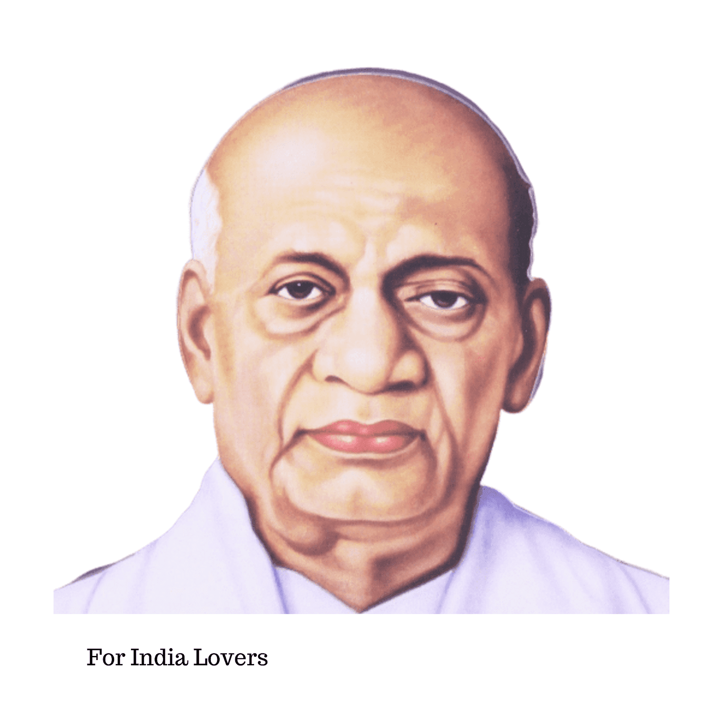

Sardar VallabhBhai Patel
1875-1950
Iron Man of India.
Vallabhbhai Jhaverbhai Patel : 31 October 1875 - 15 December 1950, commonly known as Sardar Patel,[a] was an Indian lawyer, influential political leader, barrister and statesman who served as the first Deputy Prime Minister and Home Minister of India from 1947 to 1950. He was a barrister and a senior leader of the Indian National Congress, who played a leading role in the country's struggle for independence, guiding its integration into a united, independent nation.[1] In India and elsewhere, he was often called Sardar, meaning "chief" in Hindi, Urdu, Bengali and Persian. He acted as the Home Minister during the political integration of India and the Indo-Pakistani War of 1947.[2]
Biographies
- Personal details
- Born Vallabhbhai Jhaverbhai Patel 31 October 1875 Nadiad, Bombay Presidency, British India
- Died 15 December 1950 (aged 75) Bombay, Bombay State, India
- Political party Indian National Congress
- Spouse Jhaverben Patel(m. 1893; died 1909)
- Children ManibenDahyabhai
- Relatives Vithalbhai Patel (brother)
- Alma mater Middle Temple
- Profession Barristerpoliticianactivistfreedom fighter
- Awards Bharat Ratna (posthumous, 1991)
- 1st Deputy Prime Minister of India
- 1st Minister of Home Affairs